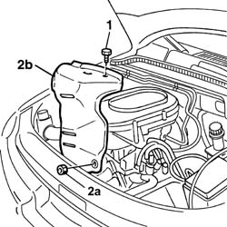
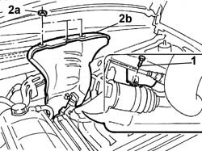
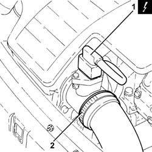
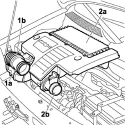
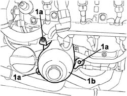
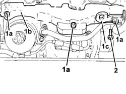
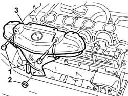
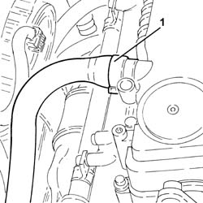
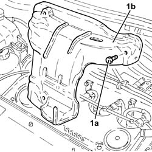
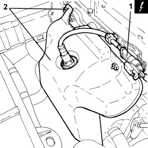

1072C44 exhaust manifold heat shield on bulkhead - r+r
- Path
- Procedures > 10 ENGINE > 1072 INLET AND EXHAUST MANIFOLDS > 1072C EXHAUST MANIFOLDS > 1072C44 exhaust manifold heat shield on bulkhead - r+r
- Kind
- repair procedure (removal / refitting; the operation number is the code)
- Applies to
- all engines; all production periods
- Interactive page
- https://sloeber94.github.io/elrnDB-fDbl/en/#/2584260
Applies to: engines: 1.2 8v; all production periods
 Removing
Removing
 Refitting
Refitting1. Undo the bolts fixing the heat shield to the exhaust manifold.
2. Undo the fixing nuts (2a) and remove the heat shield (2b).

Applies to: engines: 1.2 8v; all production periods
Refitting
RemovingTighten the nuts fixing the guard to the exhaust manifold/catalytic converter.
Tighten the bolts fixing the heat shield to the exhaust manifold.
Fastening | Component | dia | Value (daNm) | |
|---|---|---|---|---|
- | Bolt | LH MANIFOLD HEAT SHIELD BULKHEAD | M6 | 0.6 |
Applies to: engines: 1.6 16v; all production periods
Removing
RefittingPosition the vehicle on a lift.
Disconnect the negative battery terminal.
Description | Connector | |
|---|---|---|
- | Battery |
1. Undo the lower bolts fixing the heat shield.
2. Undo the nuts (2a) and remove the heat shield (2b).
Disconnect the electrical connection for the upper Lambda sensor.
Description | Connector | |
|---|---|---|
- | Lambda sensor on pre-catalyzer |

Applies to: engines: 1.6 16v; all production periods
Refitting
RemovingPlace the heat shield in its housing and secure it to the exhaust manifold by tightening the nuts to the recommended torque.
Fastening | Component | dia | Value (daNm) | |
|---|---|---|---|---|
- | Nut | LH MANIFOLD HEAT SHIELD BULKHEAD | M6 | (Exhaust manifold) 0.9 |
Tighten the lower heat shield bolts to the recommended torque.
Fastening | Component | dia | Value (daNm) | |
|---|---|---|---|---|
- | Bolt | LH MANIFOLD HEAT SHIELD BULKHEAD | M6 | (Exhaust manifold) 0.9 |
Connect the electrical connection for the upper Lambda sensor.
Description | Connector | |
|---|---|---|
- | Lambda sensor on pre-catalyzer |
Connect the negative battery terminal.
Description | Connector | |
|---|---|---|
- | Battery |
Remove the vehicle from the lift.
Applies to: engines: 1.3 JTD 16V; all production periods
Removing
RefittingPosition the vehicle on a lift.
Make sure that the ignition key is in the OFF position, then disconnect the negative battery terminal.
Description | Connector | |
|---|---|---|
- | Battery |
Carry out
Op. 7055B54 PROTECTION/GUARD UNDER ENGINE - R.R..
1. Disconnect the electrical connection from the air flow meter.
Description | Connector | |
|---|---|---|
1 | Air flow meter |
2. Loosen the collar and disconnect the air intake sleeve to the turbocharger, air flow meter side.

Applies to: engines: 1.3 JTD 16V; all production periods
1. Loosen the band (1a) and disconnect the hose (1b) from the air intake.
2. Remove the air filter (2a) complete with air flow meter (2b) releasing it firstly from the pegs underneath and then from the rear fastening.

Applies to: engines: 1.3 JTD 16V; all production periods
Undo the three bolts (1a) and remove the engine oil filter cartridge heat shield (1b).

Applies to: engines: 1.3 JTD 16V; all production periods
Unscrew the three bolts (1a) and rmeove the exhaust manifold heat shield (1b) with power unit anchorage bracket.

Applies to: engines: 1.3 JTD 16V; all production periods
Refitting
RemovingPosition the exhaust manifold heat shield with power unit anchorage bracket and tighten the bolts.
Position the engine oil filter heat shield and tighten the bolts.
Position the air filter in its seat with the air flow meter, secure to the rear fastening and then to the underlying pins.
Connect the flexible sleeve to the air intake on the crossmember and tighten the retaining collar.
Connect the air intake sleeve to the turbocharger, air flow meter side, and tighten the collar.
Connect the electrical connection to the air flow meter.
Description | Connector | |
|---|---|---|
- | Air flow meter |
Carry out
Op. 7055B54 PROTECTION/GUARD UNDER ENGINE - R.R..
Connect the negative battery terminal.
Description | Connector | |
|---|---|---|
- | Battery |
Remove the vehicle from the lift.
Applies to: engines: 1.9 DIESEL; all production periods
Removing
RefittingOp. 1016A22 CAM COVER WITH FUEL DUCT - R + R AND REPLACE GASKET
1. Undo the upper retaining bolts.
2. Undo the central nut.
3. Remove the exhaust manifold heat shield.

Applies to: engines: 1.9 DIESEL; all production periods
Refitting
RemovingFit the exhaust manifold heat shield.
Tighten the bolts and the nut fixing the shield to the manifold.
Op. 1016A22 CAM COVER WITH FUEL DUCT - R + R AND REPLACE GASKET
Applies to: engines: 1.9 JTD 8V; all production periods
Removing
Refitting1. Loosen the band and disconnect the engine oil vapour recovery pipe from the cam cover.

Applies to: engines: 1.9 JTD 8V; all production periods
1. Undo the bolts (1a) and remove the exhaust manifold heat shield (1b).

Applies to: engines: 1.9 JTD 8V; all production periods
Refitting
RemovingPlace the exhaust manifold heat shield back in its housing and secure it using the bolts.
Connect the engine oil vapour recovery pipe to the cam cover and tighten the band.
Applies to: engines: 1.4 8v; all production periods
Removing
RefittingOp. 1048A10 AIR FILTER ASSEMBLY - R.R.
- Disconnect the negative battery terminal.
1. Disconnect the electrical connection for the upper Lambda sensor.
Description | Connector | |
|---|---|---|
1 | Lambda sensor on catalyzer |
2. Unscrew the fastenings and remove the heat shield.

Applies to: engines: 1.4 8v; all production periods
Refitting
Removing- Place the heat shield back in its housing and tighten it it using the fastenings.
- Connect the electrical connection for the upper Lambda sensor.
- Connect the negative battery terminal.
Topics linked from this page (8)
- 1016A22 cam cover with fuel duct - r + r and replace gasket
- 1048A10 air cleaner filtering element - replace
- 7055B54 under-engine guard - r r
- A001 BATTERY
- A1H BATTERY ( ENGINE )
- K15 LAMBDA SENSOR ON PRE-CATALYZER ( ENGINE )
- K017 LAMBDA SENSOR ON CATALYZER
- K041 AIR FLOW METER
Topics that link to this page (25)
- 0510A30 cam lift - check with cam cover(s) removed
- 1004B10 POWER UNIT WITH MANUAL GEARBOX - R.R
- 1004B12 power unit with manual gearbox - r+r for versions with a/c
- 1016C10 cylinder head - r + r and replace gasket
- 1016C11 single cylinder head-r r gasket for versions with air conditioner
- 1024B10 engine flywheel - r + r for versions with manual gearbox
- 1024B54 ENGINE FLYWHEEL PROTECTION - R.R
- 1028H20 piston with connecting rod - r r
- 1028H21 piston with connecting rod - r r
- 1032B10 toothed timing belt - r + r for timing adjustment or replacement
- 1032B14 toothed timing belt - r + r for timing adjustment or replacement versions with air conditioner
- 1036G20 camshaft controlling intake valves in top head - r + r with top head removed - includes replacement of top head if necessary
- 1064A19 TURBOCHARGER - EXHAUST MANIFOLD - EXHAUST PIPE CONNECTING HOSE - R.R.
- 1064A50 sleeve joining turbo charger and exhaust pipe - r + r and replace seal
- 1072C10 exhaust manifold - r + r and replace seal
- 1072C16 exhaust manifold with catalytic converter - r r
- 1076B10 exhaust pipe assembly - r + r
- 1080B62 catalytic converter - r + r
- 1080B40 CATALYTIC PRE-CONVERTER - R.R.
- 1084B40 engine oil delivery pipe to turbocharger - r + r
- 1088C10 water pump - r + r
- 1088D24 rigid pipe for coolant inlet to water pump - r + r
- 1810A20 clutch - r + r
- 1820a24 thrust bearing linkage - r + r
- 5530A10 alternator - r+r